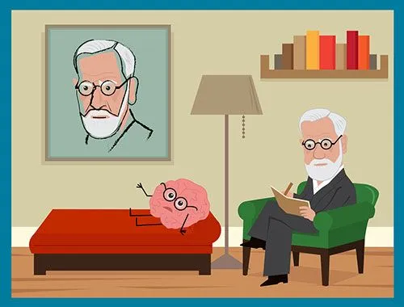
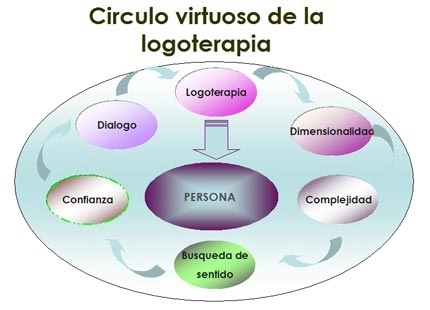

Tipos de Terapia
Es un método de investigación del inconsciente del sujeto por
medio de la asociación libre,interpreta los sueños y los actos
fallidos y es un tratamiento terapéutico y un conjunto de teorías
psicológicas y psicopatológicas derivadas de los resultados de los
2 métodos antes identificados. Se utiliza la asociación libre, él
paciente debe manifestar todas sus ideas, pensamientos, imágenes y
todo lo que piensa al psicoanalista. El paciente en esta fase
muestra una represión que le dificulta aceptar sus propias
vivencias. El psicoanalista debe interpretar las emociones y el
funcionamiento psíquico del paciente.

Su autor es Aaron Beck, es un tipo de psicoterapia con la que se
ayuda a los pacientes a cambiar su conducta mediante el cambio de
la forma en que piensan y sienten sobre ciertas cosas. Se usa para
tratar trastornos mentales, emocionales, de personalidad y de
conducta. También se llama TCC y terapia cognitiva. Es un
tratamiento psicológico a corto plazo que ayuda a modificar los
pensamientos, sentimientos y comportamientos negativos.
Se conoce como logoterapia a una variante de la psicoterapia que
gira en torno a la presentación del concepto de voluntad de
sentido como primera motivación del hombre. Este tipo de
psicoterapia que promovió el neurólogo y psiquiatra Viktor Frankl
haya su base en el análisis existencial. Frankl, quien durante
algún tiempo estuvo cautivo en un campo de concentración, explicó
con el paso de los años que consiguió sobrevivir gracias a que
pudo dar un logos (sentido o significado) a su existencia. Entre
los principales postulados de la logoterapia, además de la ya
mencionada voluntad de sentido (la cual permite demostrar que el
animatismo del hombre lo distingue frente a cualquier especie del
reino animal o vegetal), se encuentran la libertad de voluntad
(que asegura que todo sujeto está capacitado para tomar decisiones
personales y goza de la libertad necesaria para elegir su propio
destino) y el sentido de vida.

La Terapia Gestalt es una terapia psicológica humanista que busca
desarrollar el potencial humano y el crecimiento personal. Se
trata de una forma de psicoterapia utilizada para tratar diversos
trastornos psicológicos y emocionales, la cual nos acerca a
conceptos como la toma de conciencia, la autorrealización, el
desarrollo personal y la autoestima. Esta terapia procura integrar
las conductas, sentimientos y pensamientos del paciente, de manera
que sus intenciones y acciones estén enfocadas en conseguir una
salud mental óptima.
Mindfulness es la capacidad humana básica de poder estar en el
presente y de "recordarnos" estar en el presente, es decir,
constantemente estar volviendo al aquí y ahora. No podríamos vivir
sin la capacidad de estar en el presente: es la que nos permite
recordar a dónde estamos yendo mientras caminamos, aun cuando
durante el trayecto nos hayamos perdido en miles de pensamientos.
Sin Mindfulness sería imposible poder observar y reconocer la
propia experiencia y vivir en este mundo. Sin embargo, y aunque
creemos tener control consciente de nuestra atención, lo que
normalmente sucede es que estamos constantemente atendiendo a
pensamientos acerca del pasado o del futuro o bien, reconociendo
solo una pequeña porción de lo que está sucediendo en el presente.